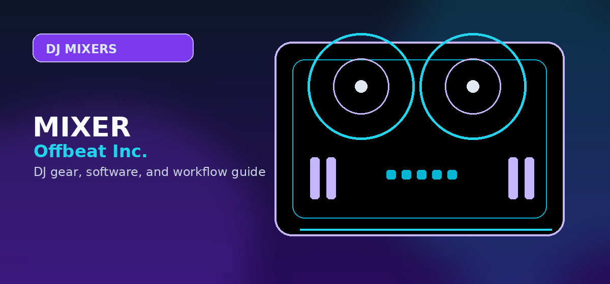

Best DJ Mixers Under $500 (2026): Pioneer DJM vs. Allen & Heath
Comprehensive guide to best DJ mixer under 500 dollars 2026 Pioneer DJM Allen Heath with practical recommendations and current buying notes — updated 2026.

Disclosure: This page uses affiliate links. We may earn a commission at no extra cost to you. Full disclosure →
Entering the DJ world in 2026 no longer requires a massive financial investment to achieve professional sound. While high-end club mixers can cost thousands, the sub-$500 market has evolved, borrowing high-fidelity pre-amps and robust build quality from flagship models. Whether you are transitioning from a controller to a standalone mixer or building a hybrid vinyl-digital setup, choosing the right mixer is the most critical decision for your signal chain. The battle for budget supremacy primarily pits the industry-standard reliability of Pioneer DJ against the legendary analog warmth of Allen & Heath. This guide breaks down the best options available this year, ensuring you get a piece of gear that doesn't just fit your budget but actually elevates your sonic output and performance capability.
The Industry Standard: Pioneer DJM Series
For DJs aiming for the booth, the Pioneer DJM-250MK2 remains the definitive choice under $500. Its primary strength lies in "muscle memory" compatibility; the layout mirrors the high-end DJM-900NXS2 found in almost every major club. In 2026, its value is cemented by its exceptional reliability and clean digital clipping headroom. The mixer provides three channels of input, allowing you to blend two decks with a third channel for a microphone or a sampler. While it lacks the complex effects of its bigger brothers, the sonic transparency is unmatched in this price bracket. It is the ideal tool for the "working DJ" who needs a dependable, compact mixer that ensures their transition from the bedroom to the club is seamless.
The Analog Powerhouse: Allen & Heath Xone Series
If you prioritize sound character over club standardization, the Allen & Heath Xone:23 is the gold standard. Unlike the clinical precision of Pioneer, the Xone series is beloved for its analog circuitry and "warmth." The Xone:23 features a renowned 2-band EQ that allows for more musical blending and smoother frequency sweeps, preventing the "hollow" sound often associated with cheap mixers. In 2026, it remains a favorite for house and techno DJs who prefer a tactile, organic feel. Its build quality is industrial, featuring a steel chassis that withstands heavy gigging. For those utilizing vinyl or high-end CDJs, the Xone:23 provides a sonic depth and richness that digital budget mixers simply cannot replicate.
Key Features to Prioritize in 2026
When shopping for a mixer in 2026, look beyond the brand name and focus on three critical technical specs: Input Versatility, Pre-amp Quality, and Connectivity. Ensure your mixer supports both Phono (for turntables) and Line (for CDJs/Controllers) inputs with a dedicated switch. With the ubiquity of USB-C and digital audio interfaces, check if the mixer offers integrated soundcard functionality to reduce latency when connecting to a laptop. Furthermore, pay attention to the "gain" knobs; a high-quality pre-amp allows you to boost quiet signals without introducing unwanted hiss or distortion. As hardware matures, the gap between "budget" and "pro" is narrowing, but the quality of the internal capacitors still determines how your mix sounds on a large PA system.
Digital Precision vs. Analog Warmth: The Choice
The decision between Pioneer and Allen & Heath boils down to your musical style and career goals. Pioneer is about precision, speed, and ecosystem integration. If you are playing EDM, Top 40, or Open Format, the DJM series provides the clinical clarity and layout efficiency needed for fast-paced mixing. Conversely, Allen & Heath is about the "vibe." For DJs focusing on Deep House, Ambient, or Vinyl-only sets, the analog saturation of the Xone series adds a professional polish to the audio that feels more like a record and less like a computer file. While Pioneer prepares you for the club, Allen & Heath prepares you for the studio, offering a sonic signature that encourages nuanced, long-form blending.
2026 Budget Mixer Comparison
| Product | Est. Price | Best For | Pros | Cons |
|---|---|---|---|---|
| Pioneer DJM-250MK2 | $449 | Club Aspirants | Industry layout, Ultra-reliable | Limited EQ options |
| Allen & Heath Xone:23 | $399 | Analog Purists | Warm sound, Great EQ | No built-in FX |
| Numark M8 | $329 | Home Studio | 4 Channels, USB Interface | Plastic build quality |
| Hercules DJMix | $249 | Absolute Beginners | Very affordable, Compact | Higher noise floor |
Quick Verdict
- Choose the Pioneer DJM-250MK2 if you plan to play in clubs and want a layout that is identical to professional gear.
- Choose the Allen & Heath Xone:23 if you are a vinyl enthusiast or want the richest possible analog sound for your mixes.
- Choose the Numark M8 if you need more than two channels on a strict budget and require a built-in USB interface.
Investing in a quality mixer is the fastest way to improve your professional sound. Don't settle for "good enough" when the right hardware can transform your performance. Check the current pricing and availability for these top-rated mixers via our affiliate links below to secure the best deal for 2026.
Bottom line: The Allen & Heath Xone:23C is the best DJ mixer under $500 -- built-in soundcard, analogue filters, and a durable crossfader. For a Pioneer-standard Rekordbox workflow, the DJM-250MK2 is the safer pick. Search Allen & Heath Xone:23 mixer on Amazon →
Shop on Amazon
Check prices on mid-range DJ mixers — Prime shipping on most models.
Also on zZounds
Flexible financing · No credit check · 45-day price guarantee.
Buyer Checklist Before You Purchase
Before completing your purchase, run through this checklist to confirm you have considered all the relevant factors:
- Check current pricing on Amazon, Sweetwater, and the manufacturer's own site — prices vary and retailer sales can save 10-20%
- Verify compatibility with your existing software and operating system (especially important for audio interfaces and DJ controllers)
- Read the most recent Reddit r/DJs posts for the specific model to catch any reliability or firmware issues not in formal reviews
- Confirm warranty terms — Sweetwater provides a 2-year warranty on most gear at no extra cost, often worth the slight price premium
- Look for bundle deals — some retailers include cables, software licenses, or accessories that add significant value
The products recommended above have been selected based on editorial research and user feedback across multiple communities. Always read the most recent user reviews before purchasing, as product quality and support can change with manufacturing revisions.
Alternatives Worth Considering
The products on this list represent the strongest options in each category, but the market changes regularly. If none of these quite fit your needs, consider exploring:
- One tier up or down from your budget — sometimes a $50 difference puts you in a significantly better product tier
- Open-box and used options — DJ gear depreciates quickly; factory-certified refurbished units from authorised dealers offer significant savings
- Last year's model — manufacturers typically update their entry-level line annually; the previous generation is often available at a deep discount with near-identical performance
Full Comparison Table
Use this reference table to compare all the options covered in this guide at a glance:
| Consideration | Entry-Level Options | Mid-Range Options | Professional Options |
|---|---|---|---|
| Typical price range | Under $150 | $150 — $400 | $400+ |
| Best for | Absolute beginners; casual use | Serious hobbyists; semi-pro | Working professionals; touring DJs |
| Build quality | Plastic chassis, standard jogs | Metal components, improved jogs | Club-grade construction |
| Software included | Lite versions only | Full versions included | Full + pro features activated |
| Resale value | Low | Moderate | High (holds value well) |
For most beginners reading this guide, the mid-range tier represents the best value. Entry-level gear is often outgrown within 6 months, while professional gear has capabilities that may go unused for years. Put the savings toward music, lessons, or a better audio interface instead.
What to Buy First vs What to Wait On
- Buy first: Controller + headphones — these are the core tools where quality directly affects the learning experience
- Can wait: Mixer upgrades, USB drives, custom cartridges — these matter more once you have core skills developed
- Rent before buying: PA speakers for mobile gigs — rental makes more sense than purchase until you have 10+ events booked
- Skip entirely (for most): Standalone media players (CDJs) — software-based workflow is professional-grade and significantly cheaper
Additional Resources and Decision Checklist
Before making your final selection, work through this checklist to ensure you have covered the key considerations specific to this category:
- Verify the exact model number before purchasing — manufacturers frequently release updated versions with the same product name but different specifications
- Check current stock availability at multiple retailers before comparing prices — popular items frequently go on back order
- Read at least 20 owner reviews on Amazon or Sweetwater specifically filtering for verified purchasers in the last 6 months
- Search YouTube for '[product name] after 6 months' or '[product name] long-term review' for durability and reliability data
- Check whether your preferred DJ or production software has a dedicated driver or profile for the hardware you are considering
Under-$500 mixer fit check
Before buying an under-$500 mixer, confirm the exact source count: turntables, media players, controller outputs, microphone, booth monitor, and recording output. Scratch buyers should verify crossfader feel and DVS/software support instead of shopping by channel count alone. If the setup is still uncertain, compare beginner DJ mixers, best DJ mixers, and the DJ audio interface guide before clicking to current prices.